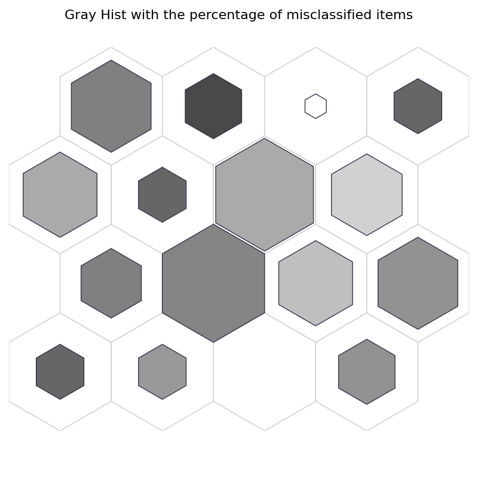
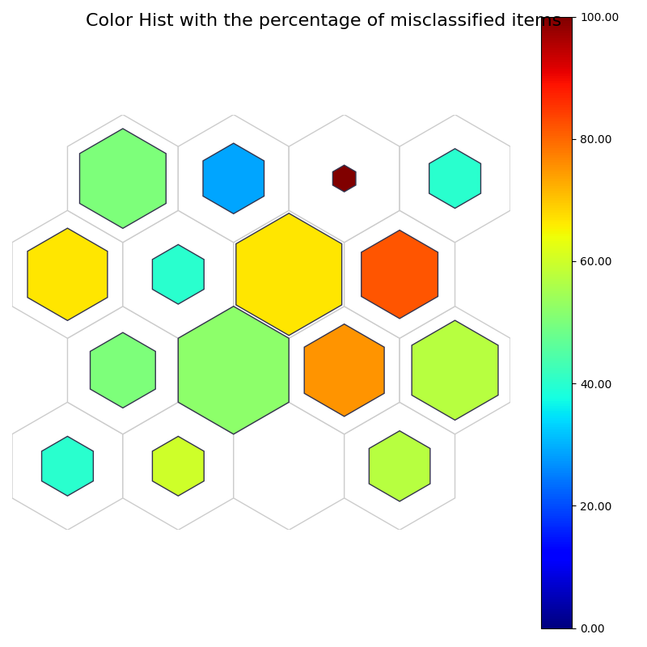
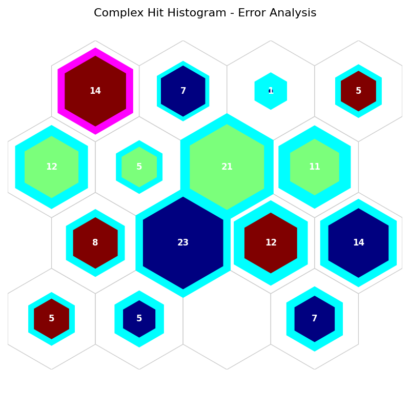
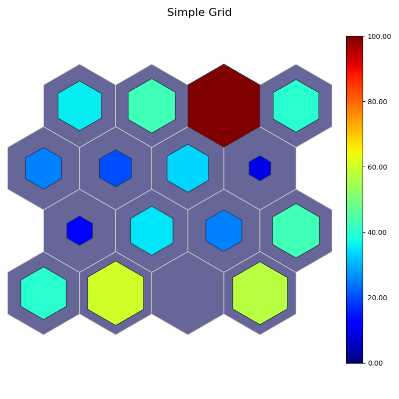
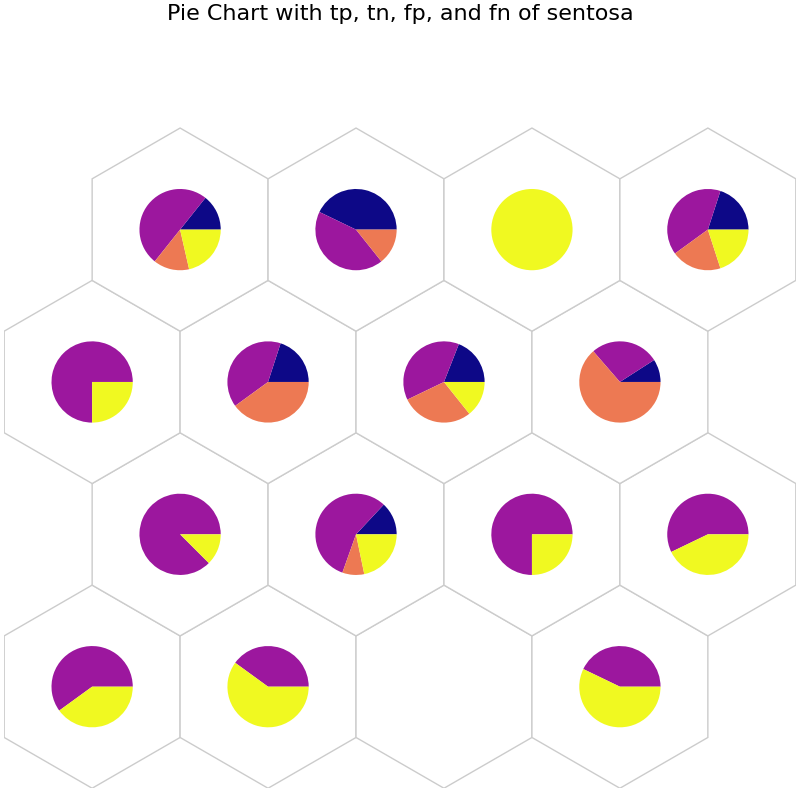
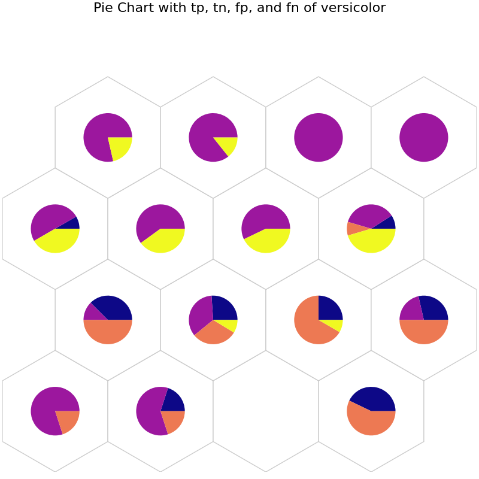
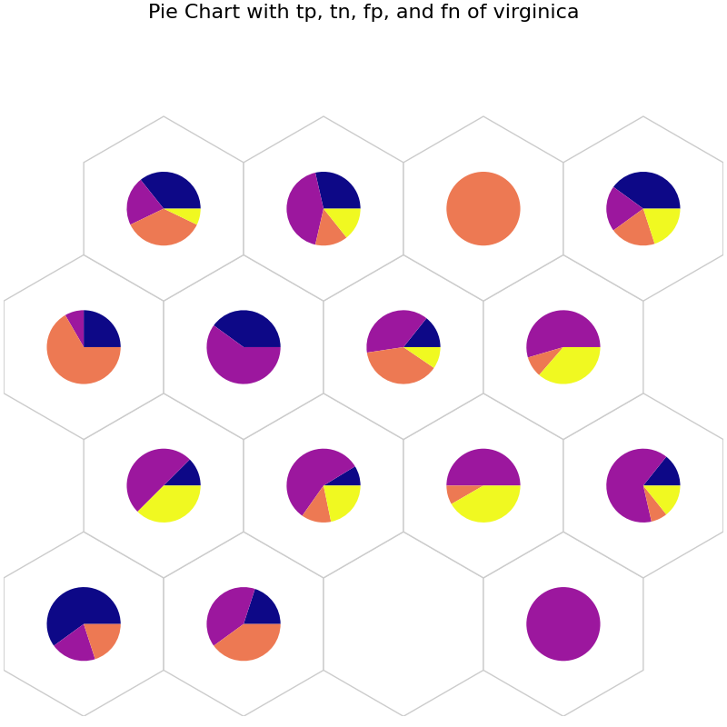
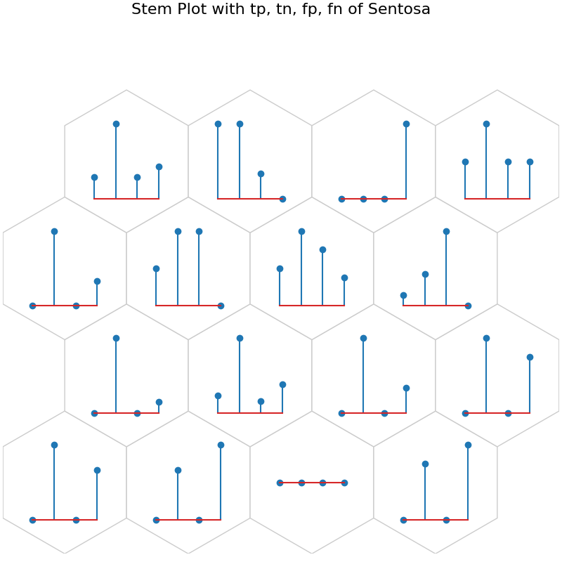
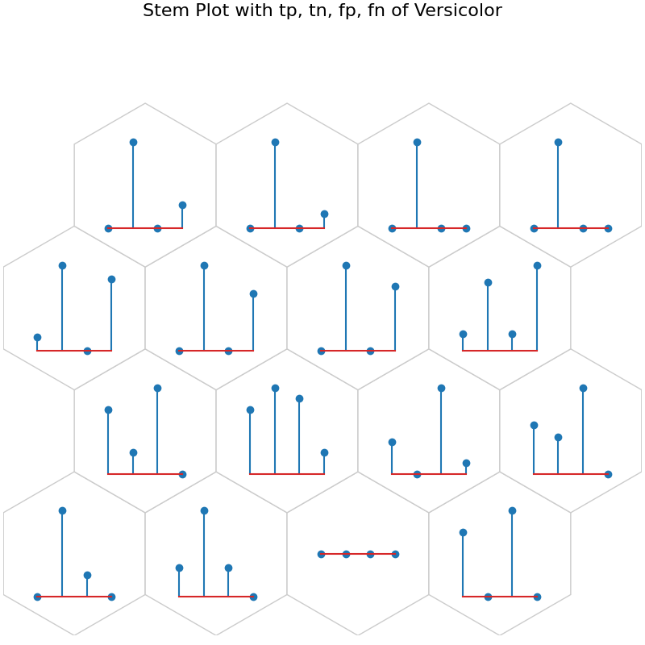
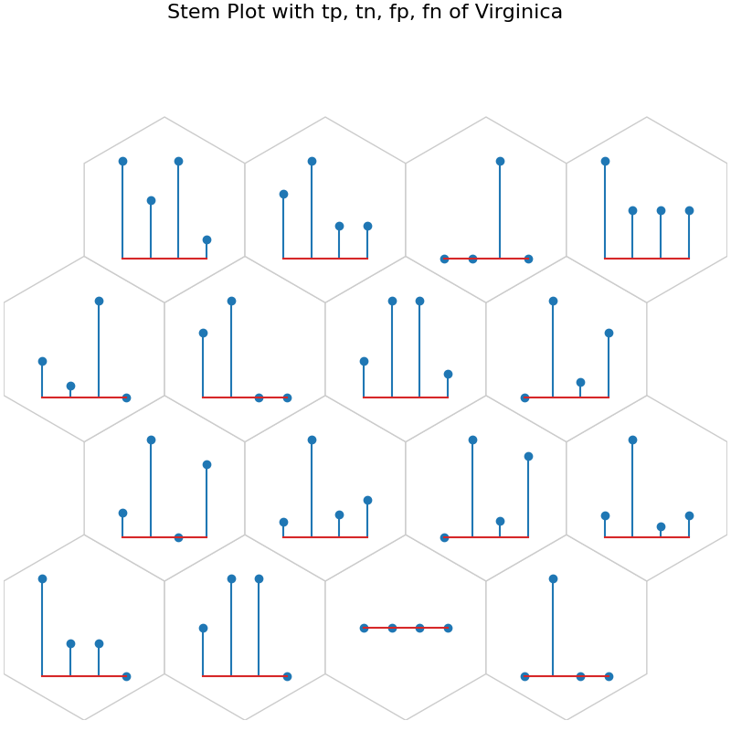

post training#
Note
Go to the end to download the full example code
This script demonstrates post training analysis on the Iris dataset using matplotlib.
- 
- 
- 
- 
- 
- 
- 
- 
- 
- 
from NNSOM.plots import SOMPlots
from NNSOM.utils import *
import numpy as np
from numpy.random import default_rng
import matplotlib.pyplot as plt
from sklearn.datasets import load_iris
from sklearn.linear_model import LogisticRegression
import os
# Random State
SEED = 1234567
rng = default_rng(SEED)
# Data Preprocessing
iris = load_iris()
X = iris.data
y = iris.target
X = X[rng.permutation(len(X))]
y = y[rng.permutation(len(X))]
# Define the directory path for saving the model outside the repository
model_dir = os.path.abspath(os.path.join(os.getcwd(), "..", "..", "..", "..", "Model"))
trained_file_name = "SOM_Model_iris_Epoch_500_Seed_1234567_Size_4.pkl"
# SOM Parameters
SOM_Row_Num = 4 # The number of row used for the SOM grid.
Dimensions = (SOM_Row_Num, SOM_Row_Num) # The dimensions of the SOM grid.
som = SOMPlots(Dimensions)
som = som.load_pickle(trained_file_name, model_dir + os.sep)
# Data post processing
clust, dist, mdist, clustSizes = som.cluster_data(X)
# Train Logistic Regression on Iris
logit = LogisticRegression(random_state=SEED)
logit.fit(X, y)
results = logit.predict(X)
perc_misclassified = get_perc_misclassified(y, results, clust)
# For Pie chart and Stem Plot
sent_tp, sent_tn, sent_fp, sent_fn = get_conf_indices(y, results, 0) # Confusion matrix for sentosa
sentosa_conf = cal_class_cluster_intersect(clust, sent_tp, sent_tn, sent_fp, sent_fn)
vers_tp, vers_tn, vers_fp, vers_fn = get_conf_indices(y, results, 1) # Confusion matrix for versicolor
versicolor_conf = cal_class_cluster_intersect(clust, vers_tp, vers_tn, vers_fp, vers_fn)
virg_tp, virg_tn, virg_fp, virg_fn = get_conf_indices(y, results, 2) # Confusion matrix for virginica
virginica_conf = cal_class_cluster_intersect(clust, virg_tp, virg_tn, virg_fp, virg_fn)
conf_align = [0, 1, 2, 3]
# Complex Hit Histogram
# Get the list with dominat class in each cluster
dominant_classes = majority_class_cluster(y, clust)
# Get the majority error type (0: type 1 error, 1: type 2 error) corresponding dominat class
sent_error = get_color_labels(clust, sent_tn, sent_fp) # Get the majority error type in sentosa
vers_error = get_color_labels(clust, vers_tn, vers_fp) # Get the majority error type in versicolor
virg_error = get_color_labels(clust, virg_tn, virg_fp) # Get the majority error type in virginica
iris_error_types = [sent_error, vers_error, virg_error]
error_types = get_dominant_class_error_types(dominant_classes, iris_error_types)
# Get the edge width based on the perc of misclassified
ind_misclassified = get_ind_misclassified(y, results)
edge_width = get_edge_widths(ind_misclassified, clust)
# Make an additional 2-D array
comp_2d_array = np.transpose(np.array([dominant_classes, error_types, edge_width]))
# Simple Grid
perc_sentosa = get_perc_cluster(y, 0, clust)
simple_2d_array = np.transpose(np.array([perc_sentosa, perc_sentosa]))
data_dict = {
"data": X,
"target": y,
"clust": clust,
"add_1d_array": perc_misclassified,
"add_2d_array": []
}
# Visualization
# Gray Hist (Brighter: more, Darker: less)
fig1, ax1, patches1, text1 = som.plot('gray_hist', data_dict, use_add_array=True)
plt.suptitle("Gray Hist with the percentage of misclassified items", fontsize=16)
plt.show()
# Color Hist
fig2, ax2, patches2, text2, cbar2 = som.plot('color_hist', data_dict, use_add_array=True)
plt.suptitle("Color Hist with the percentage of misclassified items", fontsize=16)
plt.show()
# Complex Hit hist
# sentosa: Blue, versicolor: Green, virginica: Red (inner color)
# type 1 error (tn): Pink, type 2 error (fn): blue (edge color) for corresponding dominat classes
# Edge width: percentage of misclassified items (edge width)
data_dict['add_2d_array'] = comp_2d_array # Update an additional 2-D array
fig3, ax3, patches3, text3 = som.plot('complex_hist', data_dict, use_add_array=True)
plt.suptitle("Complex Hit Histogram - Error Analysis", fontsize=16)
plt.show()
# Simple Grid
# color: perc misclassified
# sizes: perc sentosa
data_dict['add_2d_array'] = simple_2d_array # Update an additional 2-D array
fig4, ax4, patches4, cbar4 = som.plot('simple_grid', data_dict, use_add_array=True)
plt.suptitle("Simple Grid", fontsize=16)
plt.show()
# Pie chart
# tp: Blue, tn: Purple, fp: Orange, and fn: Yellow
data_dict['add_2d_array'] = sentosa_conf # Update an additional 2-D array
fig5, ax5, h_axes5 = som.plot('pie', data_dict, use_add_array=True)
plt.suptitle("Pie Chart with tp, tn, fp, and fn of sentosa", fontsize=16)
plt.show()
# tp: Blue, tn: Purple, fp: Orange, and fn: Yellow
data_dict['add_2d_array'] = versicolor_conf # Update an additional 2-D array
fig6, ax6, h_axes6 = som.plot('pie', data_dict, use_add_array=True)
plt.suptitle("Pie Chart with tp, tn, fp, and fn of versicolor", fontsize=16)
plt.show()
# tp: Blue, tn: Purple, fp: Orange, and fn: Yellow
data_dict['add_2d_array'] = virginica_conf # Update an additional 2-D array
fig7, ax7, h_axes7 = som.plot('pie', data_dict, use_add_array=True)
plt.suptitle("Pie Chart with tp, tn, fp, and fn of virginica", fontsize=16)
plt.show()
# Stem Plot
data_dict['add_2d_array'] = sentosa_conf # Update an additional 2-D array
fig8, ax8, h_axes8 = som.plot("stem", data_dict, use_add_array=True)
plt.suptitle("Stem Plot with tp, tn, fp, fn of Sentosa", fontsize=16)
plt.show()
data_dict['add_2d_array'] = versicolor_conf # Update an additional 2-D array
fig9, ax9, h_axes9 = som.plot("stem", data_dict, use_add_array=True)
plt.suptitle("Stem Plot with tp, tn, fp, fn of Versicolor", fontsize=16)
plt.show()
data_dict['add_2d_array'] = virginica_conf # Update an additional 2-D array
fig10, ax10, h_axes10 = som.plot("stem", data_dict, use_add_array=True)
plt.suptitle("Stem Plot with tp, tn, fp, fn of Virginica", fontsize=16)
plt.show()
Total running time of the script: (0 minutes 6.182 seconds)